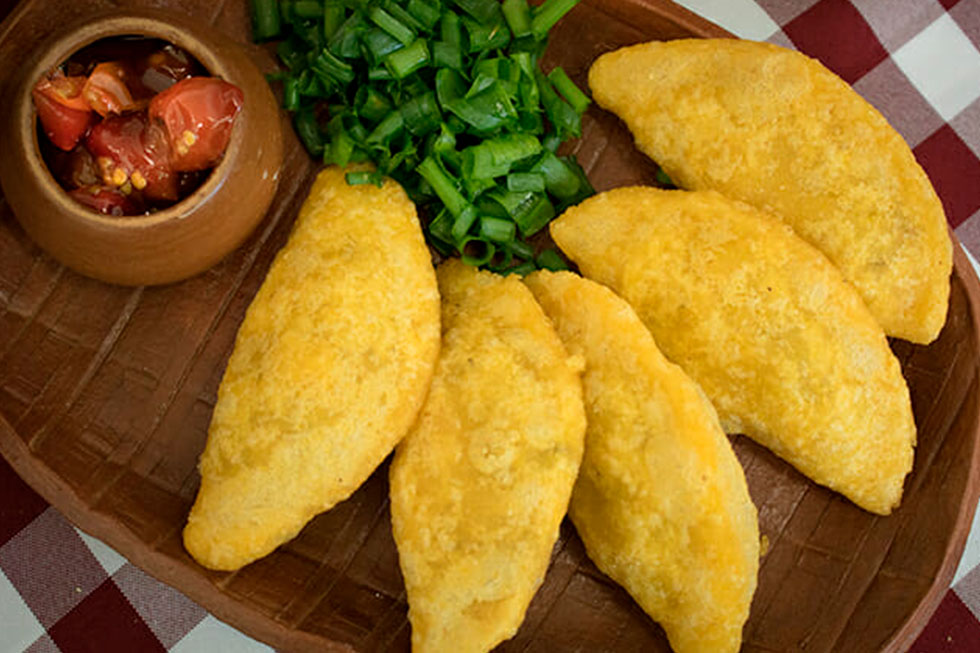

PASTEL DE MILHO
O pastel de milho é uma iguaria tradicional e deliciosa, muito apreciada no Espírito Santo. Feito com massa crocante e recheado com milho verde, carne, queijo ou camarão, esse pastel é uma explosão de sabores e texturas. Perfeito para um lanche rápido ou uma refeição leve, ele combina a simplicidade dos ingredientes com a riqueza dos sabores locais. Frito até ficar dourado e crocante, o pastel de milho é um verdadeiro conforto para o paladar e um prato que sempre conquista quem o experimenta.

Ingredientes (6 porções)
- 500 g de farinha de milho
- Sal a gosto
- Recheio a gosto (os mais pedidos é o de queijo e de carne moída)
- 7 colheres (sopa) polvilho azedo
- Água até dar o ponto (de 1 a 2 litros)
- Óleo para fritar
Modo de preparo (30 minutos)
- Primeiro coloque a água para ferver, em uma tigela coloque a farinha de milho e o polvilho, amasse a farinha de milho até obter uma textura de farofa.
- Coloque o sal e água fervendo, e vai sovando, primeiro com a colher de pau depois com as mãos, a massa tem que ficar bem lisa.
- Abra essa massa em um plástico coloque o recheio e frite até dourar, jogando óleo em cima do pastel para que eles cresçam.
- Saborear eles ainda quentes.